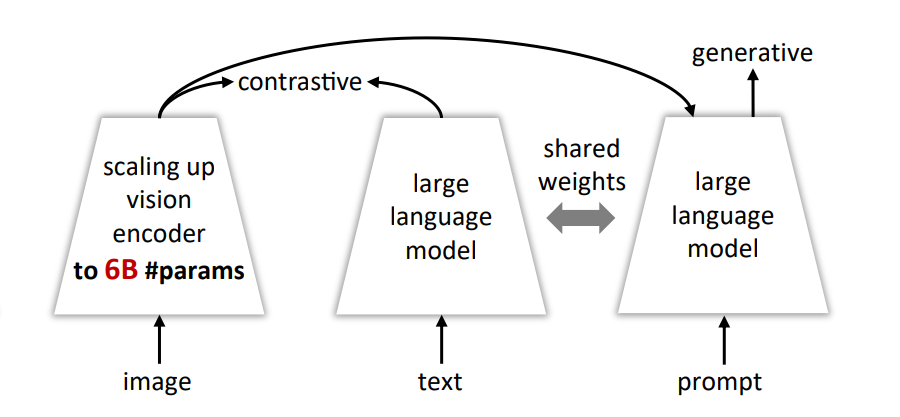
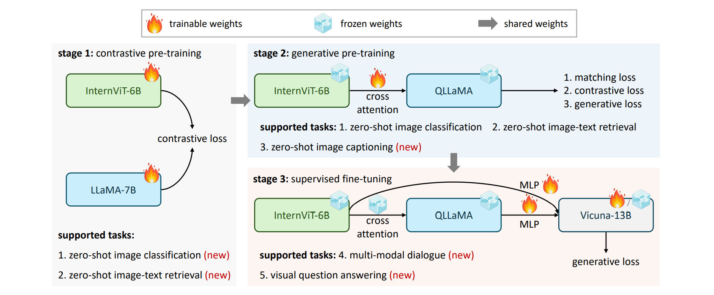
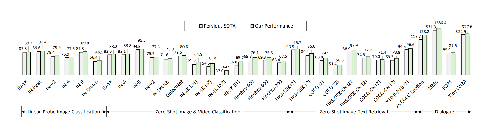

1OpenGVLab, Shanghai AI Laboratory | ArXiv: 2312.14238
There is a significant parameter scale gap between Large Language Models (LLMs) and Vision Foundation Models.
The largest open-source Vision Transformer (ViT) to date (6 billion parameters).
A multi-modal alignment component based on Llama, connecting the vision encoder with the LLM.

Figure 1: Overall Architecture of InternVL.

Figure 2: The 3-stage Progressive Alignment Strategy.
Training Process:
Trained on massive noisy image-text pairs. Aligns InternViT with a text encoder.
Connects to QLLaMA. Focuses on high-quality data for captioning and grounding.
Fine-tuning on diverse datasets for state-of-the-art performance.
Outperforming ViT-22B, BEiT-3, PALM-E.

Figure 3: Performance Comparison.
InternViT-6B achieves 90.1% Top-1 accuracy on ImageNet-1K, surpassing previous SOTA vision encoders.
Excellent performance on captioning, VQA, and retrieval tasks.
Can be used as a standalone vision encoder or integrated into LLMs to boost capabilities.
Bridging the Gap: InternVL successfully scales vision models to 6B parameters.
Versatile Foundation: A powerful visual encoder for Multi-modal systems.
Open Source: Weights and code are fully available.
SCAN ME
github.com/OpenGVLab/InternVL